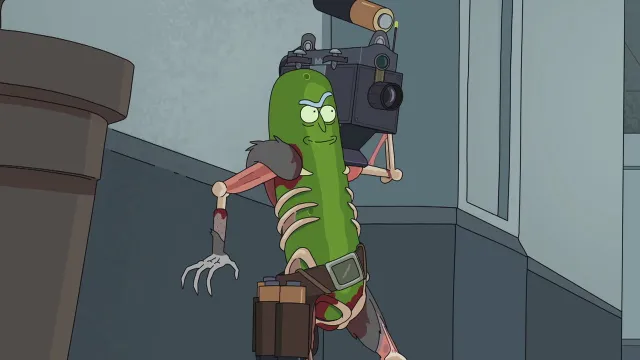

La Poción de Rick (Rick Potion #9 en Estados Unidos y Poción de Rick Nº 9 en España) es el sexto episodio de la Primera Temporada de Rick y Morty y el sexto episodio en general. Se estrenó el 27 de enero de 2014. Fue escrito por Justin Roiland y dirigido por Stephen Sandoval.
Morty usa una poción para ser atractivo a las chicas, pero el efecto se vuelve viral y contagia a todos en la Tierra, así que queda en manos de Rick limpiar el desorden.
Morty está muy interesado en Jessica, pero carece de la oportunidad de hablar con ella, ya que es demasiado tímido o Brad rechaza sus intentos cada vez que lo intenta. Con el baile anual de la temporada de la gripe, Morty habla con Jerry sobre su problema. Jerry compara el cariño de Morty por Jessica con su propio cariño por Beth cuando era un adolescente. Rick escucha la historia de Jerry y le recuerda que dicho cariño resultó en que Jerry dejara a Beth embarazada a los 17 años. Rick procede a advertirle a Morty que no vaya con Jerry en busca de consejos románticos porque su matrimonio pende de un hilo. Jerry insultado comenta que no hay ningún problema con su matrimonio. Sin estar convencido, Rick le dice a Jerry que puede creer lo que quiera, pero es bastante obvio que Beth está buscando una excusa para dejarlo. Morty se enoja y le pide a Rick que no hable de sus padres de esa manera. En respuesta, Rick le dice a Morty que lo que la gente interpreta como amor es solo una sustancia química que hace que los animales se reproduzcan y una vez que eso ha sucedido, cualquier verdadera pasión se desvanece. Después de que Rick se va, un deprimido Morty sube las escaleras para prepararse para el baile y un nervioso Jerry va a ver cómo está Beth. Pensando en lo que Rick le dijo, Morty se acerca a Rick y le pide una poción que pueda agradarle a Jessica. Después de una breve discusión, Rick llama a Morty un gran dolor en su trasero y le da a Morty un suero basado en la composición genética de los ratones de campo, un roedor que empareja vínculos con su pareja de por vida. Antes de irse, Morty pregunta si hay algo que pueda salir mal con el suero y Rick responde que no. Sin embargo, una vez que Morty se ha ido, Rick rápidamente agrega, a menos que tenga gripe, pero se encoge de hombros.

En el baile, Morty usa el suero en Jessica y, salvo por sus pupilas dilatadas, parece ser un éxito. Cuando Brad ve a Jessica sosteniendo a Morty, se enoja y trata de apartarlo de ella. Las cosas solo empeoran cuando Jessica comienza a estornudar. Se ve que el suero, que se ha acoplado al virus de la gripe y ha provocado que el virus se replique en segundos, se transporta por el aire e infecta a Brad con el suero. Brad se disculpa rápidamente con Morty, pero comienza a hacer avances sexuales con Morty, lo que lleva a otra pelea entre Jessica y Brad. Finalmente, el Director Vagina se lleva a Brad, mientras Brad estornuda y hace que el virus de la gripe mezclado con suero entre en el ponche de frutas y las salidas de aire. Pronto, todos en el baile se infectan con la gripe y, posteriormente, con el suero. Morty reza para que todo salga según lo planeado, cuando Jessica comienza a decirle agresivamente a Morty que tenga sexo con ella en el acto, frente a toda la escuela.
Este capítulo es de los más especiales de toda la serie de Rick y Morty, ya que comienza a dar forma a una línea argumental discontinua que, sin embargo, dará mucho juego a lo largo de las consiguientes temporadas. La serie nos presenta en Encuentros cercanos a Rick al consejo de Ricks, el órgano encargado de gobernar la Ciudadela donde viven Ricks y Mortys de todas las realidades. Además, el capítulo presentará al primer villano principal de la serie.
Rick intenta disfrutar de su desayuno, pero un grupo de Ricks alternativos lo secuestra y lo juzga por crímenes contra los Ricks.
Cuando 27 Ricks de dimensiones alternativas terminan asesinados y sus respectivos Mortys son secuestrados, el Consejo Transdimensional de Ricks ordena el arresto de Rick C-137 (El Rick original del programa) y lo acusa de los crímenes debido a su negativa a participar en sus asuntos. Enojado porque fue incriminado, Rick escapa del Consejo con Morty para perseguir al verdadero culpable que lo engañó y descubre que otro Rick es supuestamente responsable de asesinar a sus contrapartes mientras roba sus Mortys para ocultar su presencia.

Mientras tanto, cuando Morty comienza a creer que no es más que una herramienta para proteger a Rick, Jerry comienza a vincularse con Rick J19ζ7, el Rick más amable de todas las realidades. Después de que Morty lidera una rebelión de Mortys alternativos contra el malvado Rick, tres Ricks del Consejo de Ricks descubren que el malvado Rick estaba siendo controlado mentalmente. Se revela a la audiencia que estaba siendo controlado por su Morty.
Tras dos temporadas que contuvieron capítulos de Televisión Interdimensional, Rick y Morty dieron una vuelta de rosca a la trama y sustituyeron el capítulo de antologías por otro llamado Los malos rollos de Morty en la temporada 3 de la serie. En este capítulo, Morty descubre que Rick tiene la costumbre de borrar de su memoria los recuerdos que puedan ser demasiado gores para soportarlos, lo que evidentemente terminará en desastre.
Rick le enseña a Morty un cuarto lleno de memorias que Morty le pidió que borrara de su mente, y las cosas se salen fuera de control cuando Rick decide restaurarlas.
Rick le enseña a Morty un cuarto lleno de memorias que Morty le pidió que borrara de su mente, y las cosas se salen fuera de control cuando Rick decide restaurarlas.
Ambos llegan a la residencia de los Smith. Rick quiere que ambos vean Televisión Interdimensional, pero Morty se queja de la memoria en bucle en su cabeza y le pide a Rick que borre la memoria de su mente. Entonces Rick lleva a Morty a una cámara secreta debajo del garaje, que contiene varios tubos que archivan los recuerdos que Morty quería que Rick eliminara. Rick los llama Los Recuerdos de Morty, de ahí el título, luego se enfrenta a la audiencia y les dice que harán esto en lugar de ver Televisión Interdimensional.

Morty le pregunta a Rick cuánto tiempo quiso borrar ciertos recuerdos, y Rick solo responde que quería hacerlo Desde que tu (Morty) mente se voló. Rick agarra un tubo azul y lo apoda luna-espiración justo antes de que Rick active el casco y coloque el tubo en el orificio del casco.
En la temporada 2 de Rick y Morty nos encontramos con el capítulo titulado Total Ricktall, donde una especie de parásitos alienígenas infectan a la familia sembrando recuerdos de si mismos en su memoria. Rick blinda la casa y comienza a dar caza con sus dotes detectivescas a los parásitos, que pasan de ser uno a ser tropecientos de los más alocados, desde un velociraptor hasta la amiga imaginaria de Summer.
La familia lucha contra un parásito que les implanta recuerdos falsos en la cabeza, lo que les lleva a preguntarse si alguno de ellos es real.
La familia Smith está desayunando con el hermano mayor de Jerry , el tío Steve , cuando Jerry recibe un correo electrónico sobre la compra de boletos de avión. Luego, el tío Steve admite que los compró como agradecimiento a la familia por permitirle quedarse durante el año pasado. Cuando Rick entra en la habitación, no sabe quién es el tío Steve y la familia lo rechaza, alegando que el tío Steve se ha quedado con ellos durante el último año. Luego, Rick saca una pistola láser y dispara al tío Steve, quien resulta ser un monstruo. Mientras la familia Smith se queda boquiabierta al darse cuenta de que el tío Steve no era real, Rick les informa que era un parásito, una especie alienígena que sobrevive y se multiplica implantando recuerdos falsos en la cabeza de las personas para que puedan conquistar planetas. Les dice que estén atentos a los "personajes extravagantes y estrafalarios que aparecen de repente" y se anima con un personaje estrafalario recién presentado, el Sr. Poopybutthole .
En la sala, todos buscan más parásitos. Rick hace un cartel y lo coloca en la pared diciendo que solo debe haber 6 personas en la casa: Rick, Morty, Jerry, Beth , Mr. Poopybutthole y Summer . Al decir que no pueden arriesgarse a dejar salir a los parásitos de la casa, activa escudos antiexplosión que impiden que la gente entre o salga de la casa, para disgusto del resto de la familia. El Sr. Poopybutthole anima a la familia a recordar la vez que la familia quedó atrapada en un ascensor después de ver un musical con The Hulk y fueron liberados por " Cousin Nicky ". El flashback de la memoria hace que un parásito se multiplique y se muestra al primo Nicky en la habitación. Después de mirar el letrero, Rick le dispara al primo Nicky en el hombro, lo que lo convierte en un parásito muerto. Después de otro flashback de recuerdos, donde aparecen un nazi y un mayordomo llamado Sr. Beauregard . A medida que ocurren más y más flashbacks de memoria, aparecen más y más personajes parásitos (como el Monstruo de Frankenstein , un hombre llamado Sleepy Gary que es el marido de Beth , guerreros con temática gastronómica, etc.). Rick comienza a irritarse por el exceso de parásitos y los insulta a todos mientras intentan persuadir a Rick para que desactive los escudos antiexplosión. Después de ser incitado a tener un flashback de una barbacoa con más personajes, lo empujan al límite y la casa se llena. A medida que avanza la discusión, Jerry sospecha que es un parásito y confía en Sleepy Gary, quien realmente cree que es el marido de Beth. Para consolarlo, Gary el Durmiente le implanta un recuerdo de él y Jerry teniendo una aventura mientras estaban de vacaciones, haciéndole creer a este último que están enamorados.

A medida que insulta a más y más parásitos, los extraterrestres comienzan a sospechar de Rick, manipulando los recuerdos falsos de los Smith para volverlos en su contra. Los Smith intentan constantemente persuadir a Rick para que libere a todos los de la casa incluso después de que habla Reverse Giraffe . Después de que él se niega a hacerlo, los parásitos pronto golpean a Rick y le roban el reloj que controla el escudo contra explosiones. Después de que Rick insulta a la familia Smith (principalmente a Morty) por no confiar en él, Morty toma el arma de Rick. Incapaz de matar a Rick frente a un personaje estrafalario llamado Pencilvester , Baby Wizard , Duck With Muscles y Morty lo llevan al garaje. Después de decirle a Rick que lo recordará como un amigo e insatisfecho, Rick responde que recordará a Morty como una "perra llorona", citando que una minoría de sus recuerdos de Morty eran agradables y la mayoría eran pura molestia. Sin embargo, después de escuchar la declaración de Rick sobre buenos y malos recuerdos, Morty tiene una epifanía y dispara a Baby Wizard y Duck with Muscles. Le explica a Rick que encontró el letrero revelador; los parásitos sólo eran capaces de crear recuerdos agradables. Entonces, pudo saber que Rick era real por todos los terribles recuerdos que tenía de él. Al darse cuenta de que la teoría de Morty era correcta, Rick abre su armería y ambos se arman fuertemente.
El final de la temporada 2 de Rick y Morty nos dejó el capítulo De squanch en squanch, donde la mejor amiga de Summer y Persona Pájaro se van a casar e invitan a toda la familia, todo para que la Federación entre en escena y trate de capturar a Rick. El capítulo sentará las bases de lo que sucederá a comienzos de la temporada 3, pero además nos muestra una de esas raras ocasiones en las que Rick hace algo desinteresado por ayudar a su familia. Si es que es un squancher este Rick.
Jerry viaja por accidente a la boda de Persona Pájaro y Tammy, así que toda la familia irá tras él y será testigo de esta ceremonia fatal.
Rick, Morty, Beth, Summer y Jerry están desayunando, y Beth le dice una vez más a Jerry que consiga un trabajo, cuando alguien toca la puerta. Llega una Solapa de Mensajería, un organismo que sirve como un servicio de correo intergaláctico, con la invitación de Persona Pájaro a su boda con Tammy en Planeta Squanch. Rick inmediatamente se niega, diciendo que las bodas siempre hacen que la gente se sienta miserable (O, en sus palabras, funerales con pastel). Mientras Beth intenta convencer a Rick de que asista al evento especial de su amigo, Jerry se las arregla para ser transportado accidentalmente a través del mensajero al planeta, lo que obliga a un Rick reacio a llevar al resto de la familia a la boda.

Persona Pájaro y Tammy están casados, y Rick sigue a regañadientes el consejo de Morty de abrirse dando un brindis de boda improvisado sobre el amor y su felicidad a la pareja de recién casados. Desafortunadamente, la felicidad termina cuando la novia revela que es una agente encubierta de la Federación Galáctica y que el edificio está rodeado de oficiales. Cuando la recepción estalla en caos, Persona Pájaro recibe varios disparos y aparentemente muere, para horror de Rick. Como la mayoría de los criminales que asisten a la boda son asesinados a tiros, Rick está a punto de usar su arma de portal cuando Tammy lo embosca y lo sostiene a punta de pistola, ordenándole que entregue el arma. Lo hace, aunque también lo conecta para matar a varios oficiales de la Federación Galáctica y explotar antes de que pueda recuperarse. En consecuencia, la explosión también deja a Tammy temporalmente sorda.
Para no variar seguimos en la temporada 2 de Rick y Morty con el capítulo titulado Los Ricks deben estar locos, una clara referencia a Los dioses deben estar locos. En este capítulo, la cosa va a ir encogiendo por momentos. Rick descubre que el microverso que había creado para dar energía a su nave ha dejado de producir energía porque a su vez han creado otro microverso que ha creado otro microverso... y así sucesivamente. Además, Summer disfruta de un rato a solas en la nave de Rick que tiene un sistema de defensa que ríete tú de K.I.T.T. .
El auto de Rick se descompone, así que Morty y él entran en la batería, dentro de la que Rick creó un universo en miniatura que produjera energía para abastecer el auto.
Rick, Morty y Summer salen de un cine que exhibe una película de Acariciadores de Bolas. Van hacia la nave mientras Rick explica los pros y los contras del universo. Cuando Rick intenta arrancar el motor, se da cuenta de que la batería del automóvil está muerta. Él y Morty viajan al Microverso mientras Summer permanece en el barco, ya que Rick le da las instrucciones para mantener a Summer a salvo.

Rick y Morty luego se teletransportan a su nave cubo. Rick le explica a Morty cómo se creó el microverso. Después de que Rick y Morty tienen una conversación sobre el concepto del microverso y Morty llama al concepto esclavitud con pasos adicionales, aterrizan para ser recibidos por los habitantes del microverso. Rick les da la vuelta a los habitantes y luego le explica a Morty que el significado del gesto es paz entre mundos. Rick y Morty luego se encuentran con el presidente Chris, quien les dice que Zeep Xanflorp inventó una nueva tecnología que vuelve obsoletas las Cajas Gooble, para disgusto de Rick.
No hay nada mejor para librarte de esa horrible hora de terapia familiar que convertirse en un pepinillo. Rick lo tiene claro y así lo demostró en el capítulo de la temporada 3 de Rick y Morty titulado Ricknillo. Sin embargo las cosas en la serie ya sabéis que no suelen salir como esperaban, y a Rick se le complica el panorama al acabar en las alcantarillas y terminar valiéndose de su genio para salir de ahí... lobotomizando insectos y creando un exoesqueleto para su cuerpo de pepinillo incluido.
Rick se convierte en un pepinillo y, mientras el resto de la familia va a terapia, debe intentar averiguar cómo volver a ser humano.
Morty se está preparando para una sesión de terapia aconsejada por la escuela en el baño cuando escucha la voz de Rick. Sigue la voz hasta el garaje para encontrar que Rick se ha convertido en un pepinillo porque podía. Beth y Summer aparecen y notan el estado de pepinillo de Rick también. Morty sospecha que Rick hizo esto para evitar ir a la sesión de terapia, notando una jeringa colgando amañada para inyectar a Rick en el momento en que los demás se van. Rick niega la idea de salirse del camino y afirma que la jeringa es irrelevante. En respuesta, Beth saca la jeringa, la pone en su bolso y se va con sus hijos.
Ahora solo en la mesa, Rick comienza a hacer sonidos al azar cuando aparece un gato llamado Izzy. Rick le dice al gato que retroceda diciendo que ha visto vídeos de YouTube con gatos atacando pepinillos porque los gatos tienen miedo de las serpientes y piensan que los pepinillos son serpientes. El gato golpea a Rick, empujándolo fuera del garaje y exponiendo a Rick al sol. Rick afirma a regañadientes que morir en forma de pepinillo por el calor es el equivalente mega-genial de morir en el inodoro. Afortunadamente, una lluvia oportuna lo salva de ese destino.
Sin embargo, la corriente de agua resultante arroja a Rick al desagüe de la alcantarilla y lo obliga a sobrevivir en las alcantarillas. Rick crea un poco de jugo de pepinillos y atrae a una cucaracha hacia él. Rick mata a la cucaracha con un mordisco en la cabeza y le quita parte de la cabeza. Rick usa el cerebro de la cucaracha para impulsarse hacia adelante.
" Rickmurai Jack " es el décimo y último episodio de la quinta temporada de Rick y Morty , y el episodio 51 de la serie en general. Se estrenó el 5 de septiembre de 2021. Fue escrito por Jeff Loveness [3] y Scott Marder y dirigido por Jacob Hair . El episodio tiene clasificación TV-14-DLV.
Rick sigue haciendo lo extraño de los cuervos, pero un Morty de mediana edad espera volver a conectarse con Rick, llevándolos por un camino emocional en un lugar familiar.
Durante una cena con los protagonistas, el presidente Morty insinúa cómo Rick construyó la Ciudadela y le solicita información a Rick sobre cómo derribar la " Curva Finita Central ". Cuando Rick se niega, el presidente Morty ata a los dos a sus sillas, revelando que conservó el escáner cerebral parcialmente completado que Evil Rick tomó en " Close Rick-counters of the Rick Kind". ", y después de haberlo completado con los aperitivos, ahora tiene suficiente que hacer. lo que necesita. Cuando Morty se disculpa con Rick por traerlo a la Ciudadela, un presidente Morty disgustado usa el dispositivo de escaneo cerebral para mostrarle a Morty el alcance total del abuso de Morty en la Ciudadela; revela que los Morty tienen tanta demanda que la Ciudadela comenzó a fabricar Beths y Jerrys por la fuerza. se enamoran para producir Morties, luego recurren a la clonación: estos Morties luego se envían a Ricks a través del multiverso como compañeros, y cuando un Morty muere, se le lava el cerebro a uno nuevo con los recuerdos de la copia anterior y se envía para reemplazarlos.
Morty se horroriza y pierde la fe en Rick, antes de que este los libere de sus ataduras. El presidente Morty les permite irse, pero Rick sospecha. Al darse cuenta de que Morty rellenó el líquido de su arma de portal durante su visita, empuja a un guardia de Rick hacia un portal para probarlo y descubre que las coordenadas internas se han bloqueado en Blender Dimension , y el guardia está horriblemente desmembrado. Rick reconoce al presidente Morty como Evil Morty, sabiendo que él fue el único que hackeó su arma de portal y lucha contra los guardias antes de que él y Morty escapen. Mientras tanto, Evil Morty hace que todos los altavoces de la Ciudadela digan "Nadie se vaya, todos se queden" repetidamente; la mayoría de los Ricks y Morties naturalmente intentan irse, pero mueren instantáneamente cuando sus armas de portal pirateadas los envían a dimensiones hostiles.

Cuando la Ciudadela comienza a colapsar, Rick queda atrapado bajo los escombros. Evil Morty se ofrece a dejar que Morty se una a él, pero él perdona a Rick y lo salva. Rick y Morty regresan a la superficie, evacuando a todos los Morties deformados del subsuelo a Mortyburg. Rick lo separa de la Ciudadela justo antes de que el fluido del portal lo alcance e intenta acelerar, pero el fluido crea un agujero negro. Rick y Morty pueden acelerar desde fuera de su alcance, salvando a todos los Mortys que están dentro, pero ahora están varados en el espacio exterior sin líquido del portal. Mientras tanto, Evil Morty abandona la Ciudadela en una cápsula de escape justo cuando explota, viajando a través del agujero de gusano y penetrando en la Curva. Al emerger en el multiverso mayor, suspira con alivio, confirmando que la Curva ha sido destruida, antes de abrir un portal dorado con su arma de portal mejorada y atravesarlo.
Mortyplicidad (Mortyplicity en Estados Unidos y Rick Dobles, Mi Mortijer y Yo en España) es el segundo episodio de la Quinta Temporada de Rick y Morty y el cuadragésimo tercer episodio en general. Se estrenó el 27 de junio de 2021. Fue escrito por Albro Lundy y dirigido por Lucas Gray.
Los Smith sospechan que alguien les está persiguiendo pero, ¿Quién es real y quién no?
Rick y la familia están comiendo cuando Rick le dice a la familia que Dios es real y que ha estado durmiendo durante miles de años, y que él y Morty se escabullirán entre las nubes y lo matarán. Beth les dice a todos que Jerry está consiguiendo un trabajo. Rick señala esto como algo mal, luego criaturas parecidas a calamares irrumpen en la casa y disparan a todos uno por uno. En otro lugar, el Señor Siempre Quiere Ser Cazado pide que lo persigan, y la familia intenta agarrarlo hasta que el reloj de Rick activa una alarma, mostrando que alguien acaba de matar a una familia señuelo.

En el auto, Rick explica que los calamares están tratando de cazarlo y, desde el incidente de Beth Espacial, ha creado varias familias señuelo en varios lugares del país para protegerse de cualquier posible asesino que intente asesinar a la familia. Sin embargo, los Smith comienzan a discutir y, mientras lo hacen, los calamares los atacan desde arriba y proceden a disparar en pedazos su auto. Sin embargo, rápidamente se revelan como una familia señuelo. Otra familia está en Italia de vacaciones y son emboscados y asesinados. En otra casa, Rick y Morty notan que su familia señuelo ha sido destruida y cierran la casa con llave y proceden a ver un programa sobre un hombre lobo que viaja en el tiempo llamado Cuando Lobo en un Cable Interdimensional. Sin embargo, su comentario sobre el programa se interrumpe cuando más calamares los atacan, bombardeando su casa sin importar la seguridad.
En otra versión más de la Residencia Smith, otra Familia Smith toma nota. Los cinco hablan de ello y Summer pregunta si ellos mismos son señuelos. Esto asusta a Rick cuando le dice a Morty que busque un número en su trasero. Morty mira y Rick se tira un pedo. Jerry sale con cuadrados de limón sin gluten, sin azúcar y sin limón, y Rick los lleva en su Crucero Espacial a una de las casas de señuelo. Entra y dice la contraseña, congelándolos en su lugar. Morty descubre que los señuelos están haciendo señuelos. Rick va a su señuelo y reactiva su cabeza para hacer preguntas antes de desactivar el ser por completo. Conducen por el campo y ven otra Residencia Smith creada por otro Rick, excepto que Rick no recuerda haberlas construido.